Chefchaouen est l'une des villes les plus photogeniques du Maroc, celebre pour ses ruelles aux murs peints en bleu et son ambiance paisible.
Installee au coeur des montagnes du Rif, elle offre un melange unique entre patrimoine andalou, artisanat local et nature spectaculaire.
Entre ses petites places animees, ses escaliers fleuris et ses panoramas sur les cimes, Chefchaouen est ideale pour une escapade relaxante.
Sites a visiter
01
Medina bleue
Ville célèbre pour ses ruelles peintes en bleu, la médina de Chefchaouen offre une ambiance unique et apaisante. C'est l'endroit idéal pour se promener, prendre des photos et découvrir l'artisanat local.
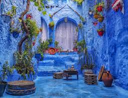
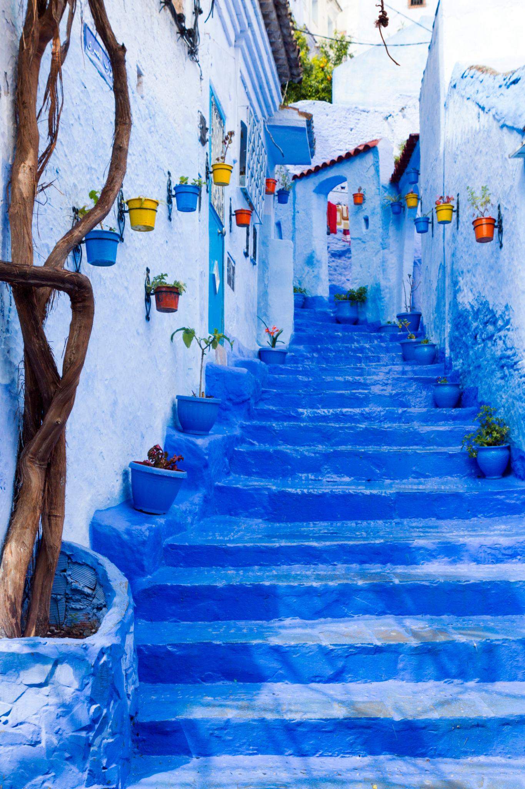
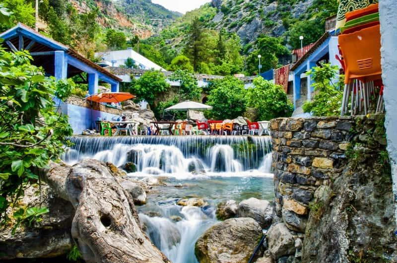
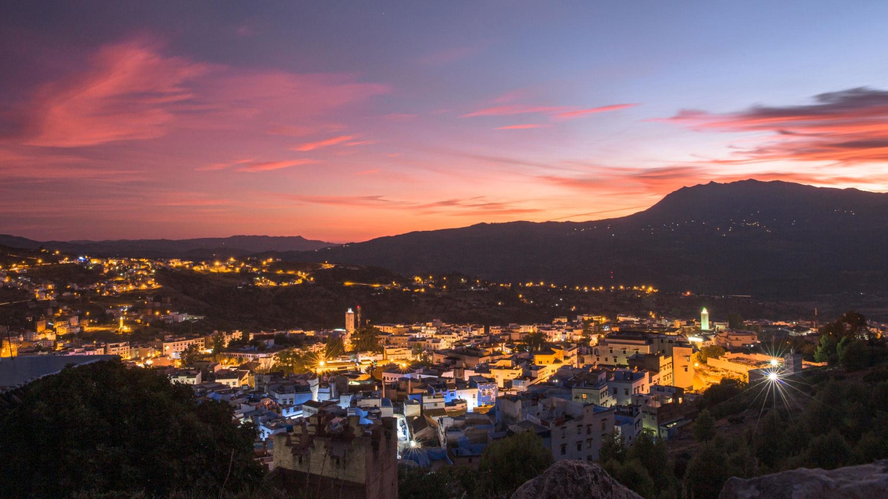
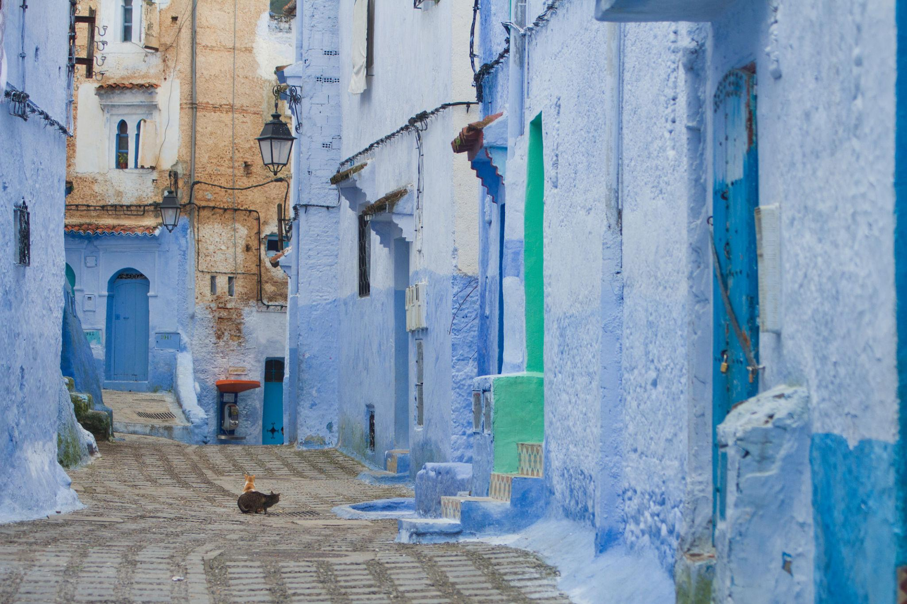
02
Kasbah et musee ethnographique
Situee sur la place Uta El-Hammam, la Kasbah raconte l'histoire de la ville et offre un jardin interieur agreable.
Forteresse historique située sur la place principale. Elle abrite un musée et un jardin intérieur. Depuis ses tours, la vue sur la ville est magnifique.
03
Mosquee espagnole
Point de vue incontournable au coucher du soleil, accessible apres une courte marche depuis le centre-ville.
Située sur une colline, cette mosquée offre une vue panoramique exceptionnelle sur toute la ville, surtout au coucher du soleil.
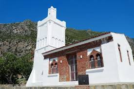
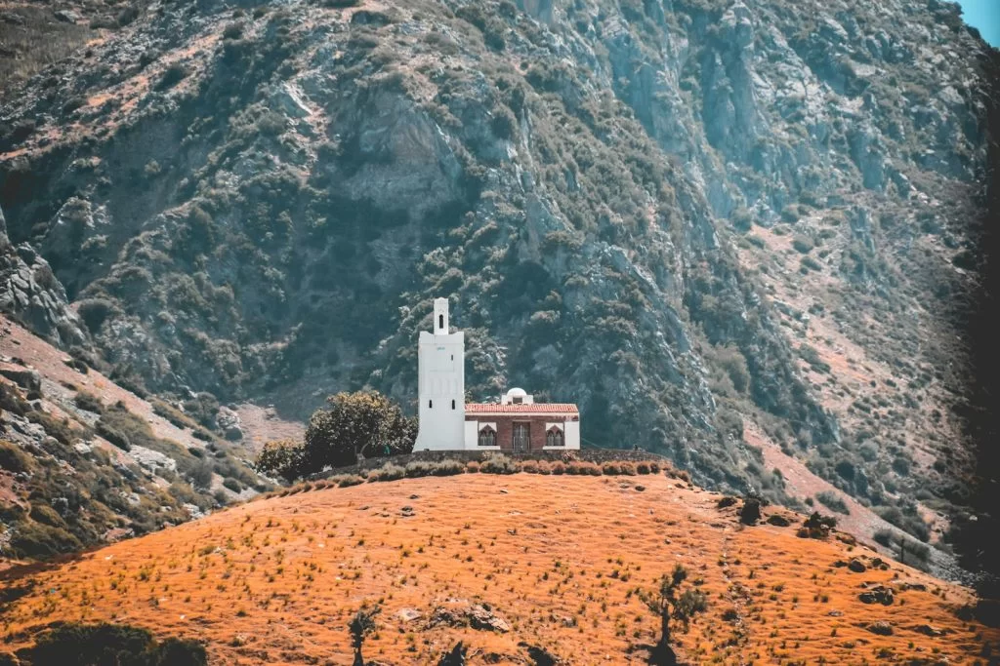
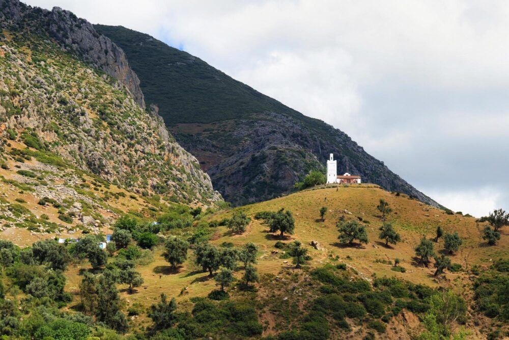
04
Akchour et pont de Dieu
A proximite de la ville, ce site naturel est ideal pour une randonnee entre cascades, bassins et paysages du Rif.
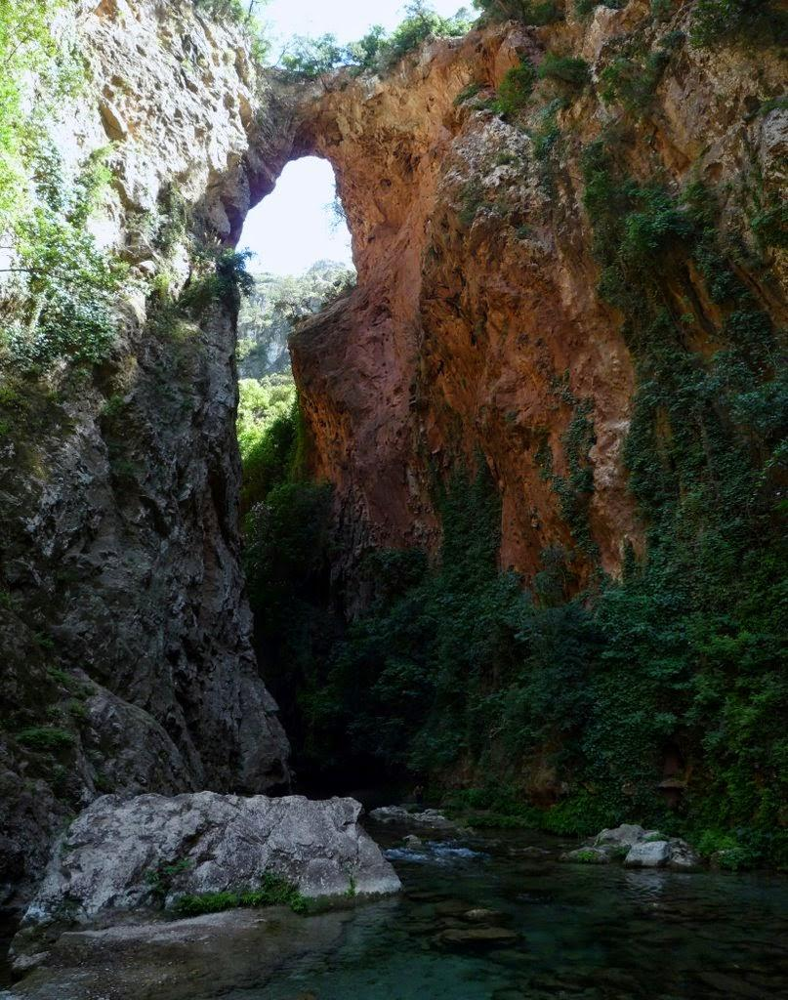
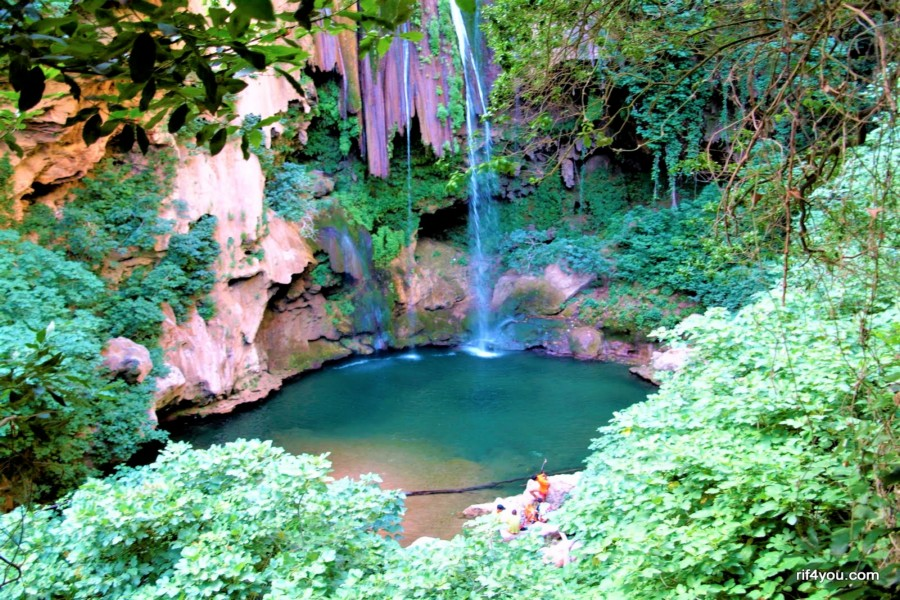
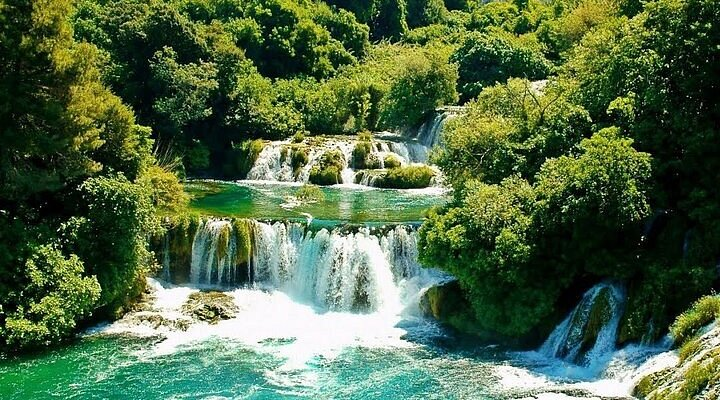
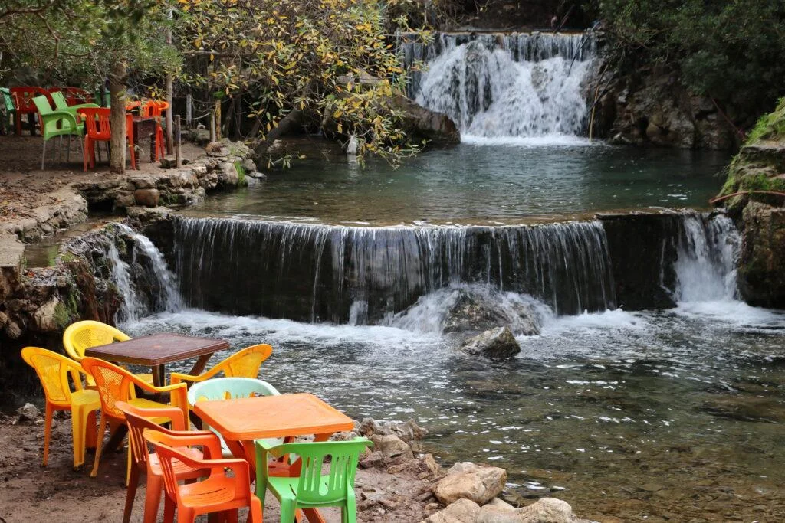
04
Montagne du Rif
Chefchaouen est entourée par les montagnes du Rif, parfaites pour la randonnée, la nature et les paysages spectaculaires.
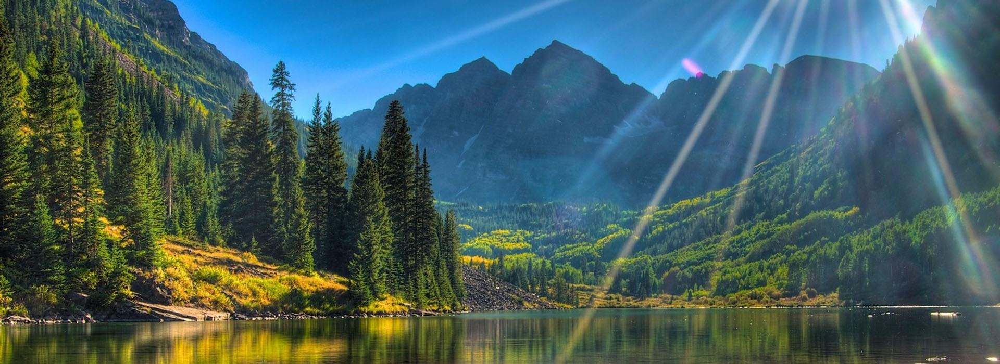
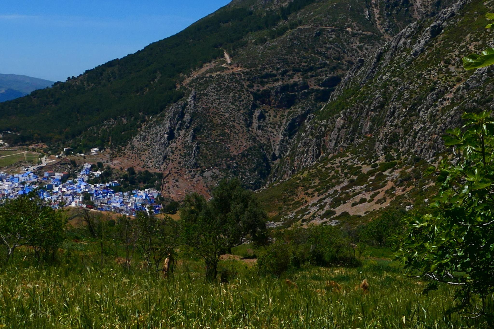
04
Ras El Maa
Source d'eau naturelle située à la sortie de la médina, Ras El Maa est un lieu rafraîchissant où les habitants viennent se détendre. On y trouve aussi de petits cafés avec vue sur les montagnes.
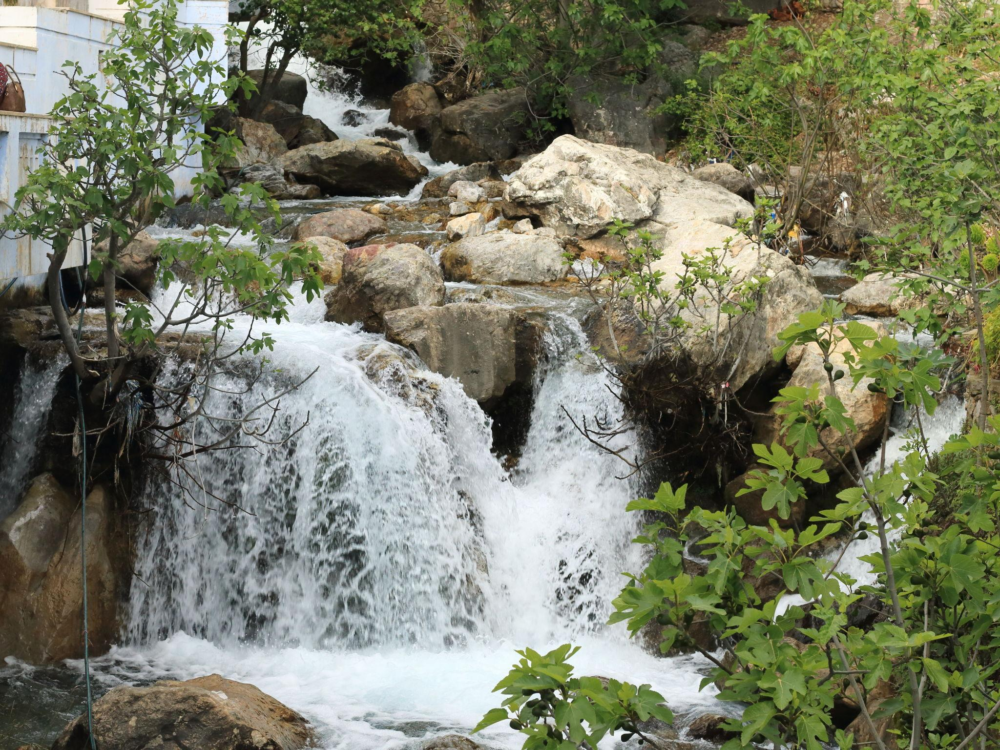
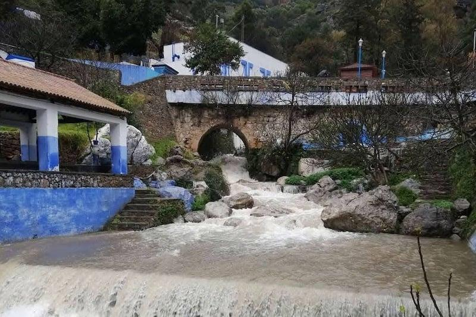
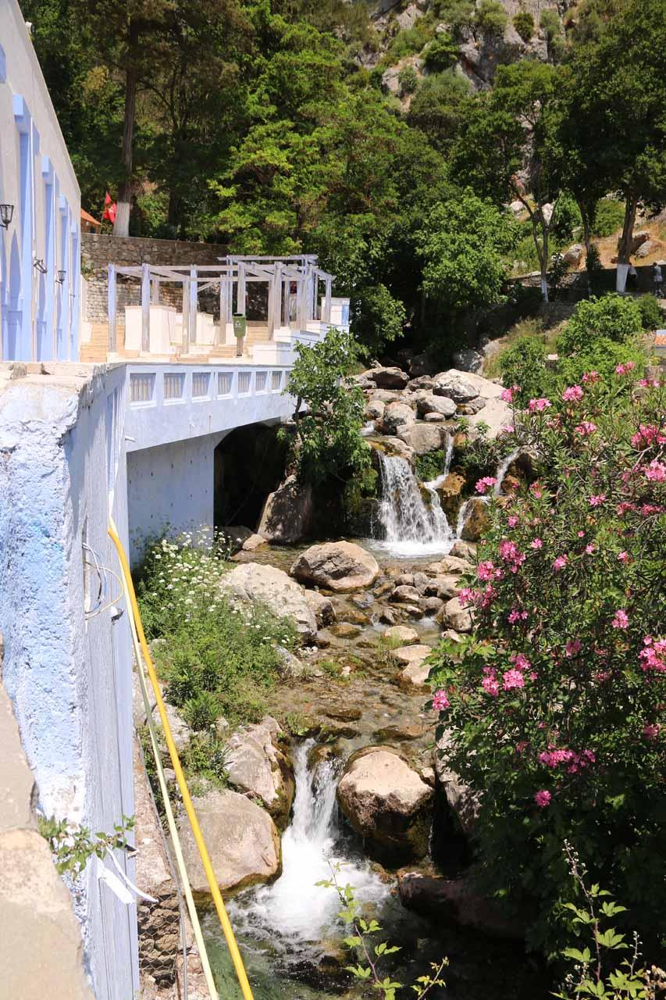
Gastronomie
Saveurs du nord marocain
01
Tagine de poulet au citron
Un grand classique local, parfume d'olives et de citrons confits.
02
Bissara
Soupe de feves tres populaire dans le nord, souvent servie au petit-dejeuner.
03
Fromage de chevre du Rif
Specialite de montagne appreciee avec du pain traditionnel et du miel.
04
The a la menthe
Incontournable dans les cafes de la medina, avec vue sur les ruelles bleues.